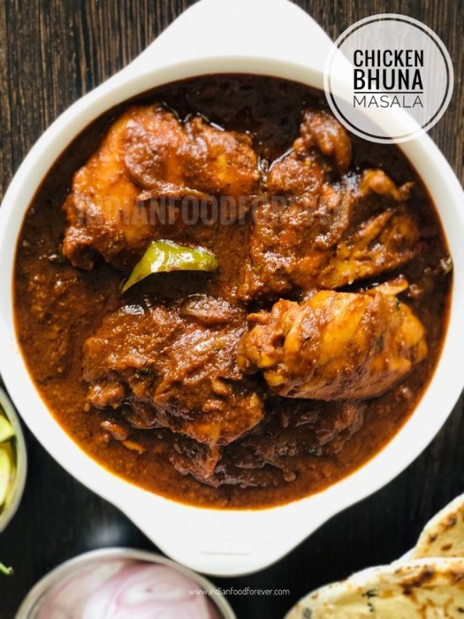

Chicken Bhuna Masala
Chicken bhuna masala as the names suggest is made by bhunoeing or
sauteing the masala on low flame for a long time to get that perfect
flavor and texture. A simple and easy to make. Serve chicken bhuna
masala with naan or paratha makes a sumptuous treat. It is finger
licking delicious.
Ingrediants
- 500 gms Chicken On Bone
- 4 – 5 large Onions roughly chopped
- 3 medium sized Tomatoes roughly chopped
- Curd.
- 2-3 tblsp Ginger-Garlic Paste
- 3-4 green chilies – roughly chopped
- 2 tsp Kashmiri Chilli Powder for color
- 1 tsp Red Chilly Powder
- 2 tsp Coriander Powder
- 1 tsp Black Salt (Kala Namak)
- 1/2 Amchur Powder (Dry Mango Powder)
- 1 tsp roasted Jeera Powder (Cumin Seeds)
-
2 tsp Kasoori Methi Powder (Dry Fenugreek Leaves)
- 1/4 cup beaten Curd
- Salt to taste
How to cook
-
Lightly roast all ingredients in a pan over medium heat. Once the
aroma starts to come out, put the ingredients in a grinding bowl.
Grind to a fine powder. Keep in a sterilised bottle for further use.
-
In a heavy botom pan / kadai, heat the ghee/oil. Now add roughly
chopped onions and saute them till golden brown in color. This will
take 10 – 15 mins. Do not fry on high flame. Let the onions saute on
medium flame and sir it occasionally. Make sure the onions are brown
but not burnt. Otherwise the curry will have bitter taste.
-
Now add ginger-garlic paste and saute further till the raw smell of
garlic and ginger disappears.
-
Now add the kashmiri red chilly powder. Stir it in the ghee to let
it release its color.
-
Immediately add tomato puree, green chilies and salt.
-
Continue to saute on high heat until tomato puree gets cooked. Add
the dry masalas and cook till oil begins to separate.
-
Lower down the heat, add beaten smooth curd and keep stirring till
curd gets into the masala properly.
-
Cover and cook till more oil begins to separate from the masala.
-
If the masala begins to stick to the base of the kadai then keep on
splashing some water.
-
Now add washed chicken pieces and begin to cook on high heat for 7-8
mins.
-
Add 2 tsp freshly garam masala and add little water just enough to
avoid sticking of the masala. Keep the remaining garam masala for
some other time. You can use it in korma, curry, and kebabs.
- Cover and cook on low flame.
-
Keep stirring in between. Cook until done. Should take 10 -1 2 mins.
-
Switch off the flame and transfer the chicken to the serving bowl.
-
Garnish with chopped coriander leaves and slit green chilies.
- Your bhuna chicken masala is ready.